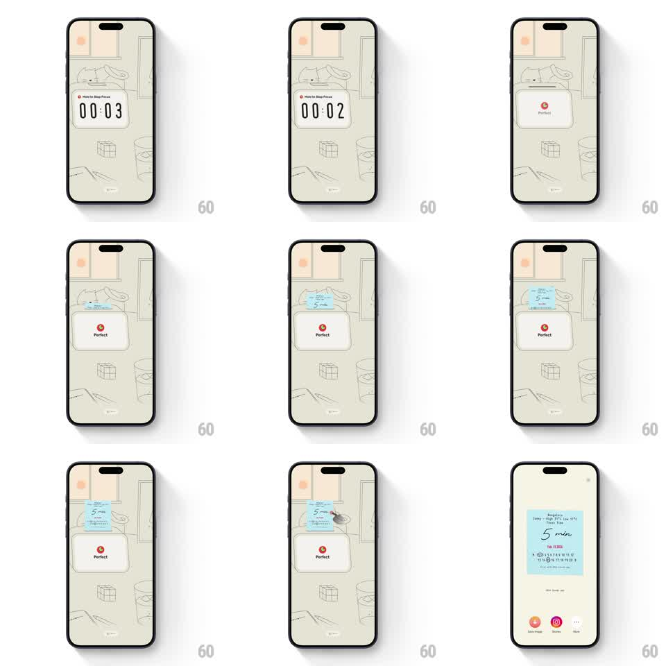

Media
Frame-by-frame

Rebuild this animation 1:1: DTD Sounds' focus-session finale - when the timer hits zero, a thermal receipt prints out from the top of the screen, unrolling the session summary ("5 min", date, barcode) over the illustrated room.

Rebuild this animation 1:1: DTD Sounds' focus-session finale - when the timer hits zero, a thermal receipt prints out from the top of the screen, unrolling the session summary ("5 min", date, barcode) over the illustrated room.
## Integration
Integration: stack-agnostic spec - springs given as stiffness/damping, timed motions as duration + curve; map every value to your framework and animation library of choice.
## Scene
DTD Sounds focus screen: a warm line-illustrated room (dog on a couch, sun in the window) with a small rounded timer card counting down ("00:04"..."00:01"); on completion the card shows "Perfect"; then a blue-paper receipt descends from the top edge, ending with share icons at the bottom.
## Motion spec
Pattern: skeuomorphic receipt print-out after timer completion.
- The countdown card's seconds tick with a soft flip per second (150ms).
- At zero the card crossfades to the "Perfect" state (250ms) with a tiny check pop (scale, spring ~400/16).
- After a 400ms beat, the receipt starts printing from a slot at the top edge: the paper extends downward at a steady printer pace (~120px/s), its leading edge slightly curled and wobbling (rotateX sway +/-3 degrees); content is already on the paper - it reveals as it prints.
- The receipt grows past its summary (session title, "5 min", date, barcode) until it tears free: a perforation bounce (translateY +/-4px, 200ms) then it hangs full length.
- Share icons fade up at the bottom (200ms, 60ms stagger) once the receipt settles.
- The printed receipt idles with a gentle paper sway (rotateZ +/-1 degree, 3s).
## Calibration
- Printer pace is constant - no easing on the print itself; the charm is mechanical.
- The blue thermal paper, monospace-ish figures, and barcode must read as a real receipt.
## Reduced motion
Receipt fades in fully extended (350ms); no sway.
## Don't miss
- The leading-edge curl - the paper tips forward as it prints, then flattens when it hangs.
- The timer card remains visible behind the receipt - the receipt layers over the scene, not replacing it.